Change: 42 ways
Typography, Layout Design
Baltimore MD, 2026
Typography class, MICA
About
This book is an attempt to visualize my experience and relationship with change. The text in this book is from Norman Fischer’s article Impermanence is Buddha Nature. Change isn’t just a fact of life; we have to accept and work with.
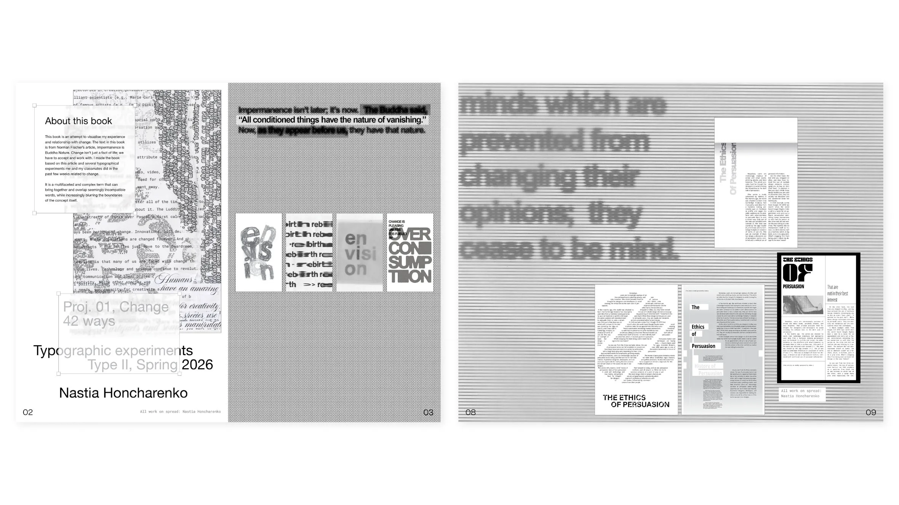
The task
This booklet is based on several typographical experiments me and my classmates did in the past few weeks related to change. This the last out of six parts of “CHANGE. 42 WAYS” project. During the previous parts I created an array of typography studies: 24 single word posters, 8 layout designs, 4 collages and 4 obstructed layouts.


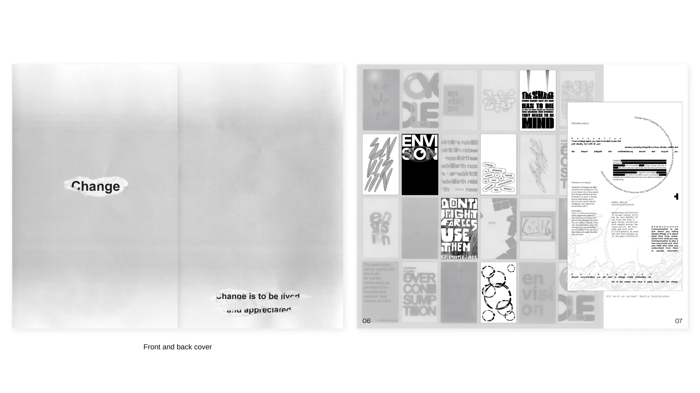
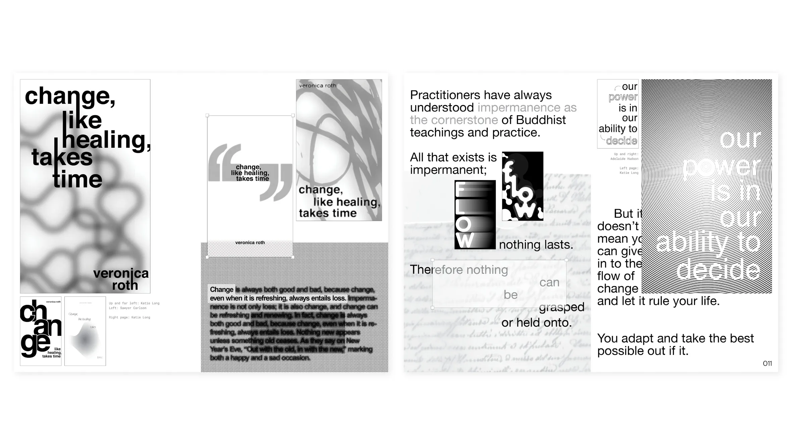
Treatments and solutions
The primary techniques I used during this project were blurring, transparency, and texture overlay. I was particularly interested in achieving various effects through scanning and analog processing.
8 out of 24 single word and single phrase posters


4 out of 8 layout designs
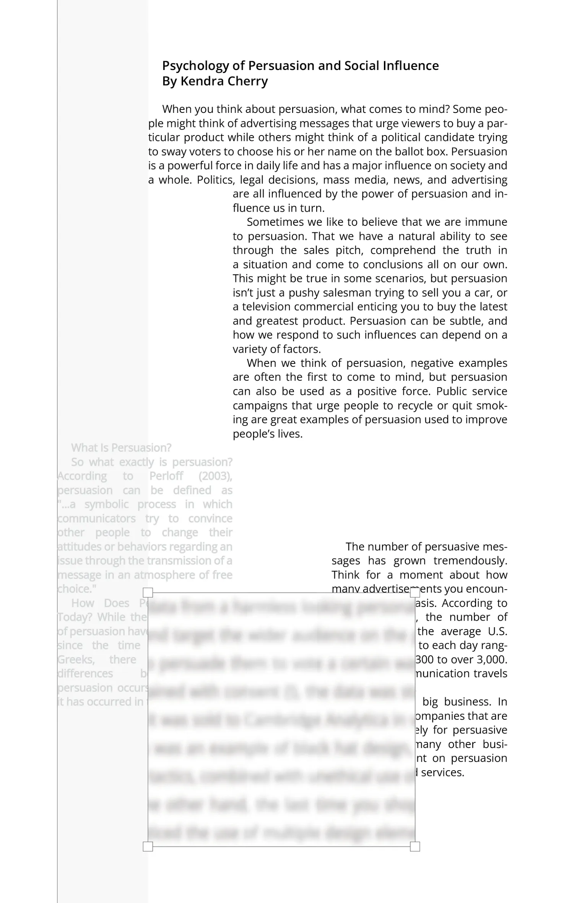
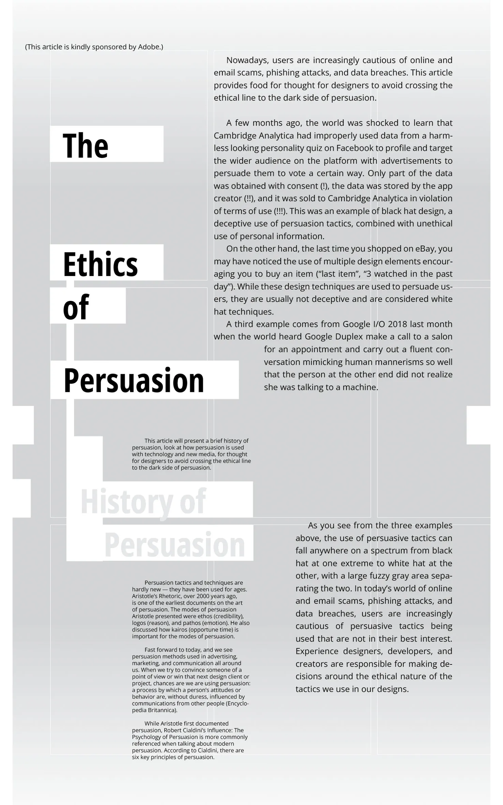
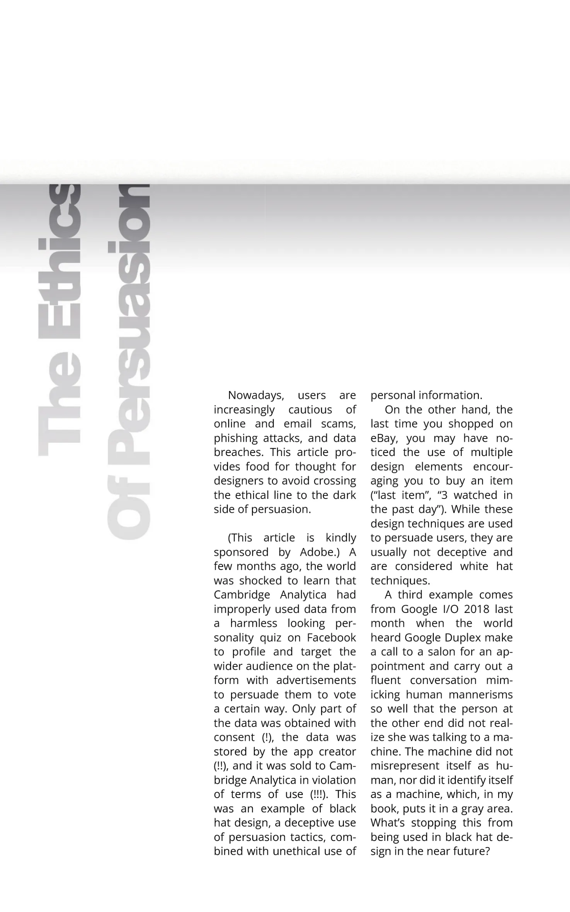
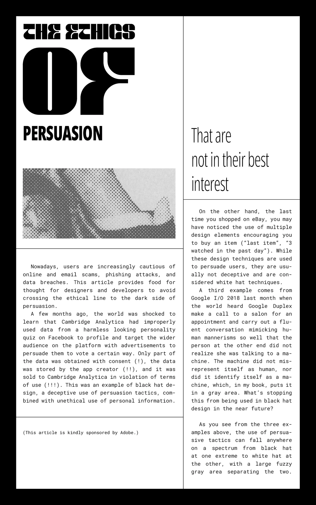
4 out of 4 analog collages
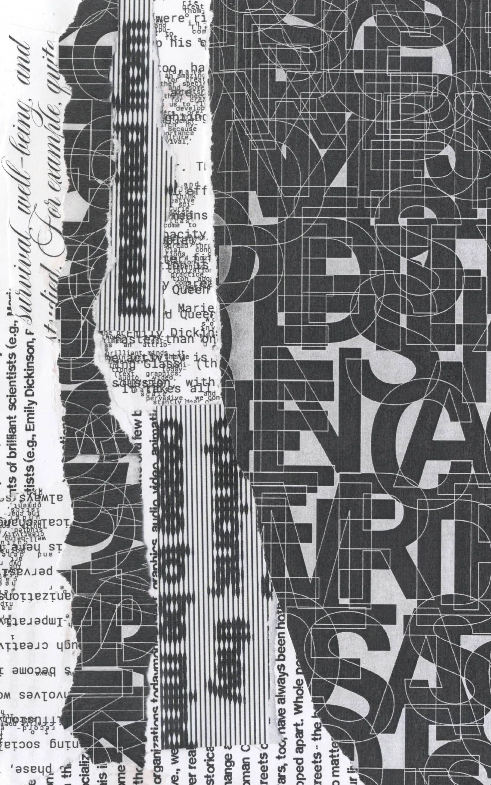
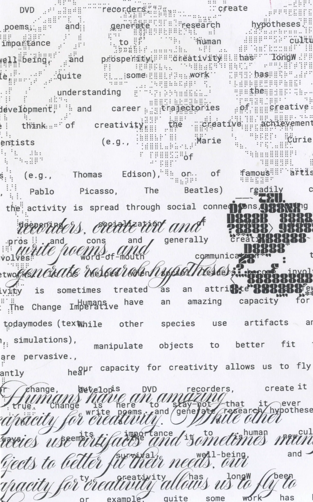
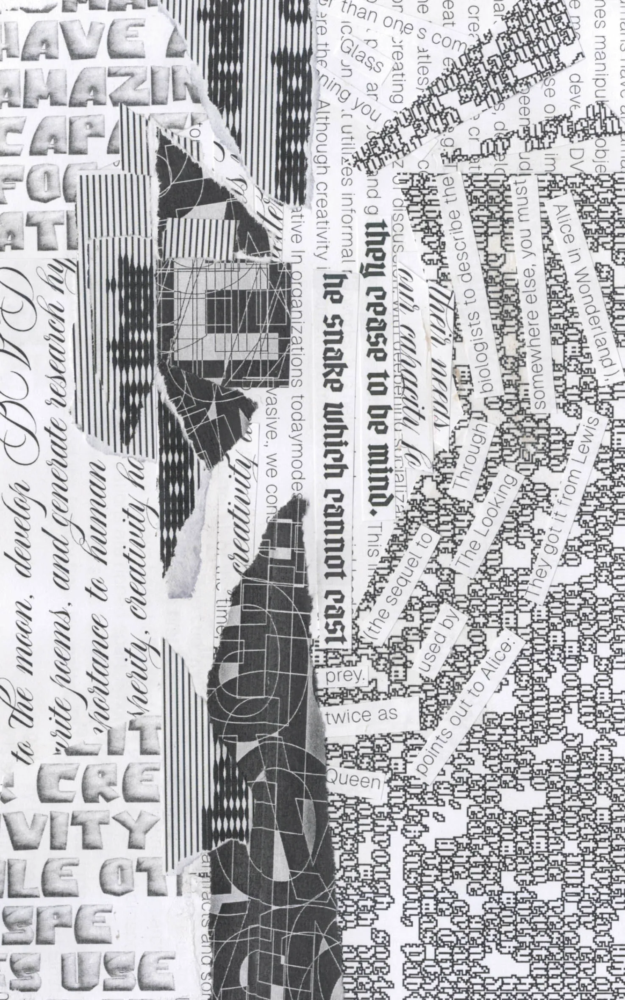
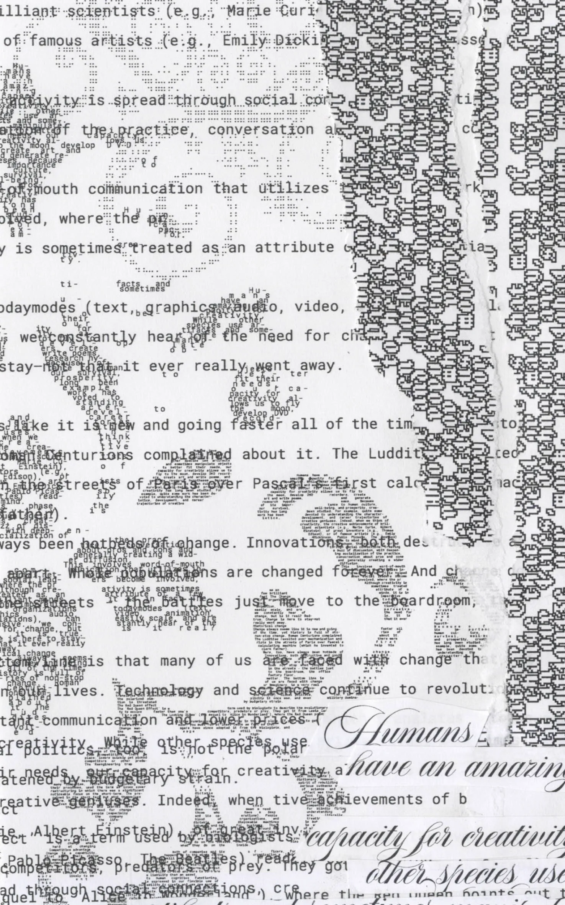
Element of interest
The frosted glass effect below was created by placing tracing paper over the spread while scanning.
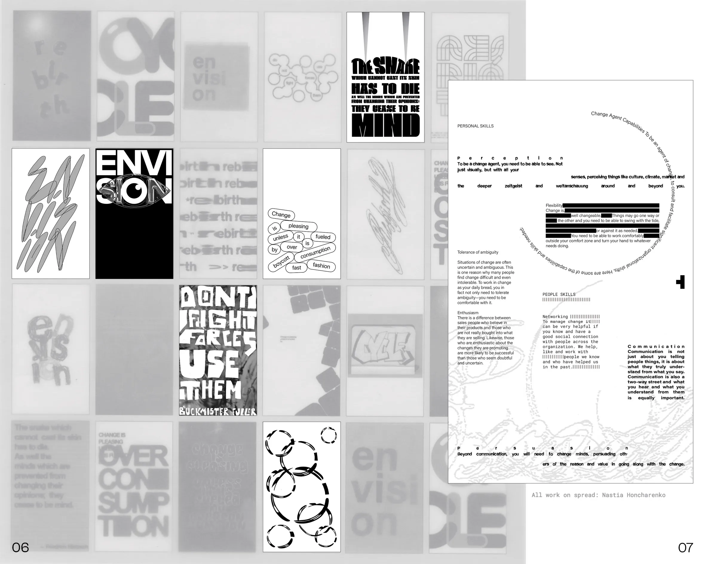
Selected details
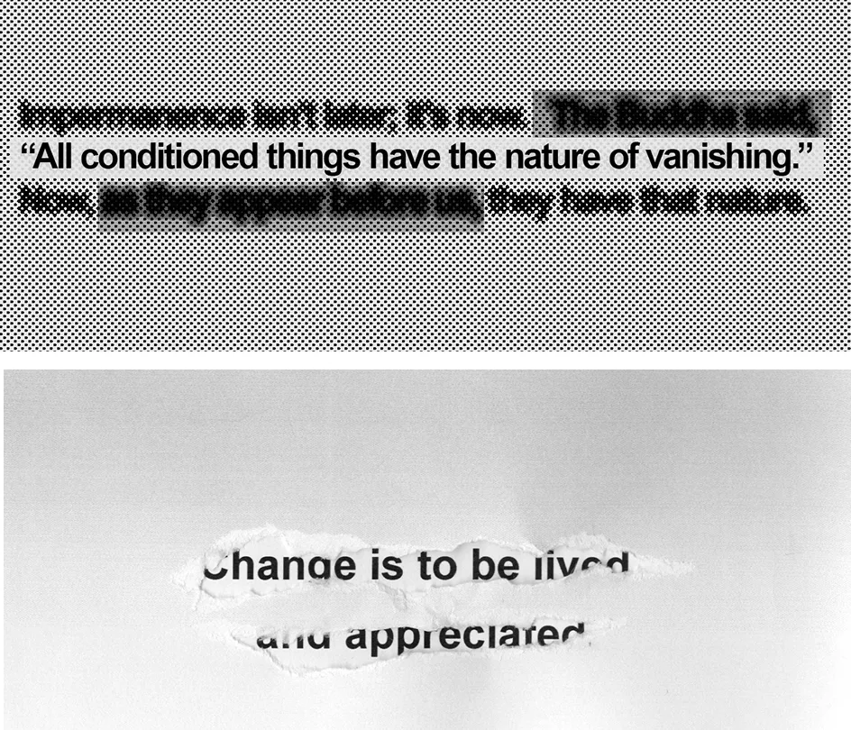
More about the process
The two final parts (after doing the designs) were done in collaboration with peers. The first was arranging explorations into a tapestry fabricated together in assigned groups.
The second is the book itself, where one fifth of used images had to be my classmates’ designs. So, in the book a.k.a. the summary of this project I acknowledge and analyze the most creative and effective designs in our class.